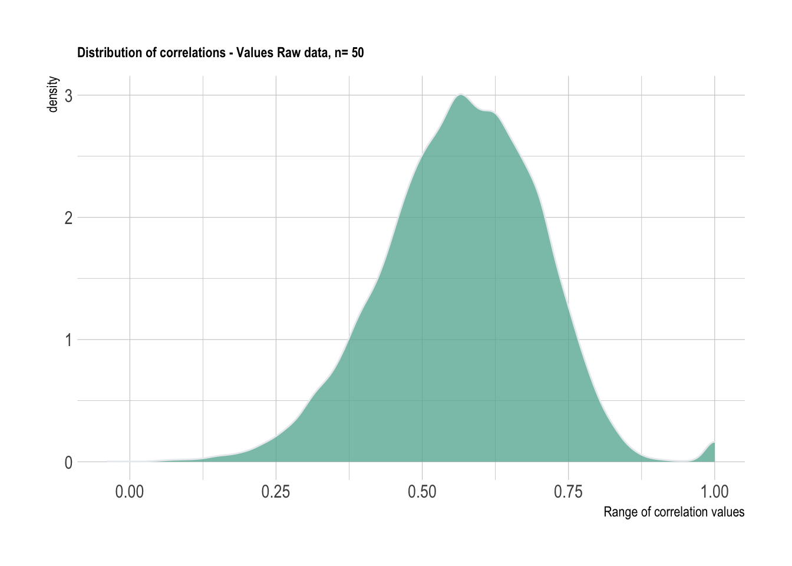
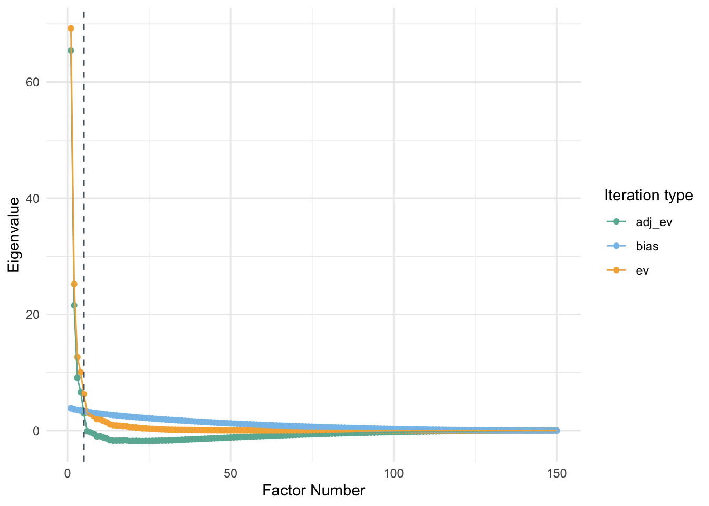

Chapter 5 Principal Component analysis
One of the most important algorithms used in dimensionality reduction is PCA. This method works very well with large datasets which makes it ideal for tasks such as this one.
5.1 Data Preparation
We will be working with a sample size of 50 from the Values data. This will be utilized for demonstrating the code. The problem of positive definite matrices although has not been completely solved at this point, the demonstrations are quite helpful.
set.seed(133)
n = 50
data_PA <- data_val %>%
drop_na() %>%
group_by(country) %>% sample_n(n) %>% ungroup %>% dplyr::select(-country) %>%
t %>%
cor
data_PA %>%
reshape2::melt(value.name = "cor") %>%
ggplot(aes(x=cor)) +
geom_density(fill="#69b3a2", color="#e9ecef", alpha=0.8)+
labs(title = "Distribution of correlations - Values Raw data, n= 50",
x = "Range of correlation values")+
theme_ipsum() +
theme(plot.title = element_text(size=9))
5.2 Parallel analysis (PA)
PA is considered to be one of the most trusted algorithms to determine the number of factors to be retained in a dataset. It has been proven to be more accurate than several other statistical methods such as the elbow method using the scree plot, Kaiser rule, or Velicer’s MAP test. Traditional PA compares eigenvalues (\(\lambda_1\)…\(\lambda_k\)) generated by the data at hand with averages of simulated eigenvalues (\(\bar{\lambda}_1\)…\(\bar{\lambda}_k\)). Correlation matrices consisting of the same dimensions are randomly generated a specific number of times and averages of all eigenvalues simulated are retained. The mean simulated eigenvalues are compared with the eigenvalues obtained in the data. When the \(\lambda_k\) > \(\bar{\lambda}_k\), you retain the eigenvalue. The number of eigenvalues retained is considered as the most optimum number for identifying the dimensionality of the data.
#Function for building Parallel analysis plots
PA_graph <- function(data){
library(paran)
library(scales)
PA_allData <- paran({{data}}, iterations = 1000, centile = 0, quietly = TRUE, status = TRUE, all = TRUE, cfa = TRUE, graph = FALSE)
PA_df <- tibble(PA_allData$AdjEv,
PA_allData$Ev,
PA_allData$RndEv,
PA_allData$Bias)
PA_df <- PA_df %>%
janitor::clean_names() %>%
tibble::rownames_to_column() %>%
mutate(rowname= as.numeric(rowname)) %>%
rename("pc" = rowname,
"adj_ev" = pa_all_data_adj_ev,
"ev" = pa_all_data_ev,
"rnd_ev" = pa_all_data_rnd_ev,
"bias" = pa_all_data_bias) %>%
pivot_longer(cols = c(adj_ev, ev, bias))
PA_df %>%
ggplot(aes(x = pc, y = value, color = name))+
geom_point(size = 1.5)+
geom_line()+
scale_x_continuous(name='Factor Number', breaks= pretty_breaks()) +
scale_y_continuous(name='Eigenvalue', breaks= pretty_breaks()) +
labs(legend_title = "Type of values")+
scale_color_manual(values=c("#69b3a2", "#85C1E9", "#F5B041"))+
geom_vline(xintercept = PA_allData$Retained, linetype = 'dashed', color = "#566573")+
#geom_text(aes(x=10, label="Retain 5 components", y=40), position = position_dodge(width=0.9), colour="#566573", angle=90, size=2)+
guides(color = guide_legend(title="Iteration type"))+
theme_minimal() +
theme(plot.title = element_text(size=9))
}PA_graph(data_PA)##
## Using eigendecomposition of correlation matrix.
## Computing: 10% 20% 30% 40% 50% 60% 70% 80% 90% 100%